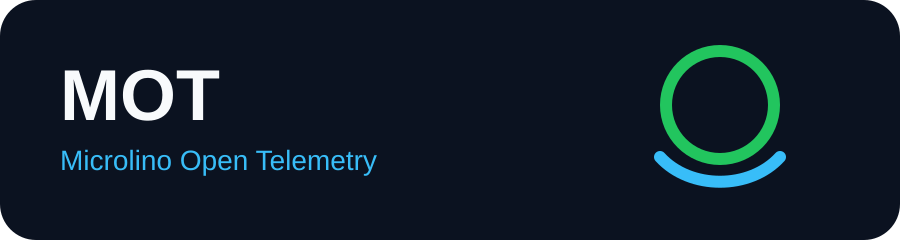
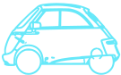
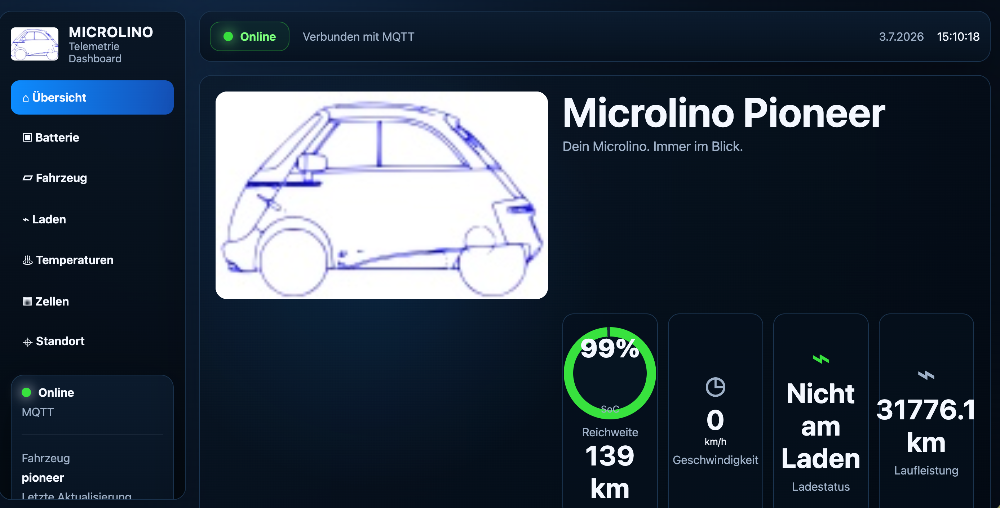

Two passive CAN buses
Display CAN and Standard CAN are read independently without controlling vehicle behaviour.

Open dashboardThe MOT experience
Live vehicle data, secure access and bounded history in a responsive portal designed for desktop and mobile.

2 × CAN LIVE SOC 100%One telemetry core · multiple services
Vehicle data is decoded once at the edge. Local tools, the MOT cloud and ABRP remain separate service paths.
Display CAN and Standard CAN are read independently without controlling vehicle behaviour.
ESP32-C6 dual-CAN pilot, ESP32-WROOM or LilyGO. Shared decoders, telemetry model and optional GPS.
MQTT/TLS with unique X.509 identity, live state, bounded history and APIs.
Cognito sign-in, authorized vehicles and authenticated live telemetry.
Setup, diagnostics, recovery and local OTA — available without the cloud.
Optional firmware-to-ABRP telemetry API over WiFi. The MOT portal is not in this path.
Open-source vehicle telemetry
A modular, passive telemetry platform for Microlino — local-first, privacy-aware and securely cloud-connected.

Quick start · controlled beta
A single-use claim binds a provisioned vehicle to an authenticated user. Device certificates remain on the device.
Get the prepared device, beta account and expiring claim code.
Open the dashboard and authenticate through Cognito with PKCE.
Enter the single-use proof. No device private key enters the browser.
The backend atomically binds the vehicle to the signed-in user.
The portal shows only authorized live and historical telemetry.
Project status · 06 August 2026
The ESP32-C6 N16 received both Pioneer CAN buses, decoded battery energy flow and published live telemetry through WiFi and AWS IoT. ESP32-WROOM and LilyGO remain supported alternatives.
Validated: two passive CAN inputs, Pioneer battery power, WiFi/AWS telemetry and portal history
Pilot boundary: C6 N16 qualified; XIAO and long-duration operation remain limited
Next: production wiring, enclosure, OTA parity and wider lifecycle gates